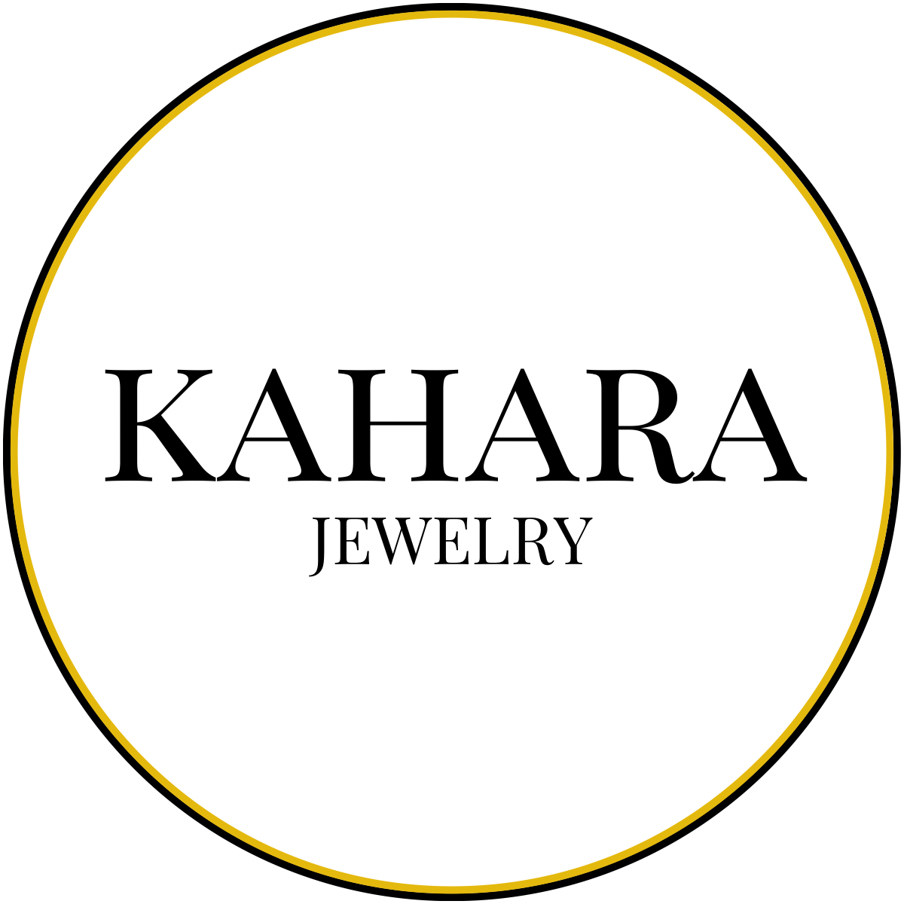
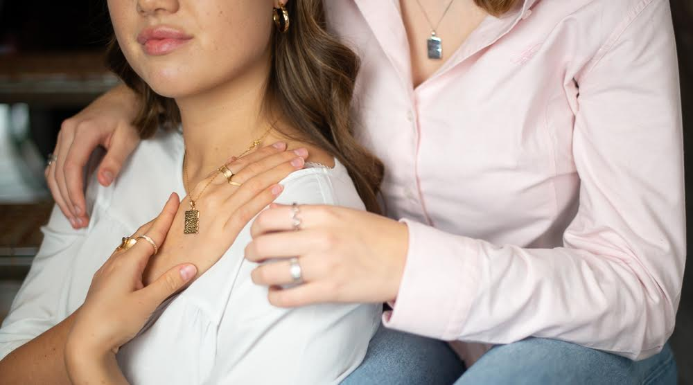

Projektet
Fra startup-idé til smykkebrand
Kahara Jewelry var et startup, som jeg var med til at starte. Her fik jeg mulighed for at være med helt fra begyndelsen og arbejde med mange forskellige dele af virksomheden – fra produktpræsentation og content til Instagram og webshop.
Jeg arbejdede blandt andet med produktbilleder, styling, SoMe-content og Shopify og var også selv model på noget af det visuelle materiale.
Projektet blev mit første møde med at arbejde mere målrettet med visuel kommunikation og digitale platforme, og det var med til at vække min interesse for det kreative og digitale arbejde.

